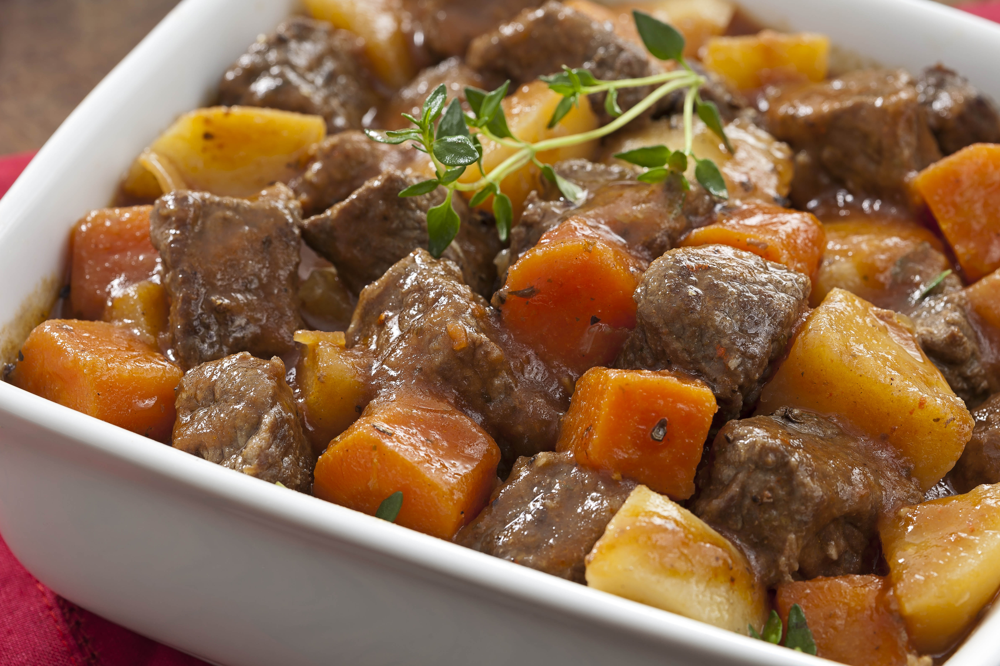

Panquecas
Ingredientes:
- 1 xícara de farinha de trigo
- 1 xícara de leite
- 1 ovo
- 1 colher de sopa de açúcar
- 1 colher de sopa de manteiga derretida
- 1 colher de chá de fermento em pó
- Uma pitada de sal
Modo de Preparo:
- Em uma tigela, misture a farinha, o açúcar, o fermento e o sal.
- Adicione o ovo, o leite e a manteiga derretida à mistura seca e mexa até obter uma massa homogênea.
- Em uma frigideira antiaderente aquecida em fogo médio, despeje uma porção da massa e espalhe uniformemente.
- Cozinhe por cerca de 2 minutos ou até que as bordas da panqueca estejam firmes e apareçam bolhas na superfície.
- Vire a panqueca com o auxílio de uma espátula e cozinhe por mais 1-2 minutos.
- Repita o processo com o restante da massa.
- Sirva as panquecas quentes com a cobertura de sua preferência, como mel, frutas, ou geleia.
Omelete
Ingredientes:
- 2 ovos
- 2 colheres de sopa de leite
- 1 colher de sopa de manteiga
- Sal e pimenta a gosto
- Recheio opcional (queijo, presunto, tomate, cebola, cogumelos, etc.)
Modo de Preparo:
- Quebre os ovos em uma tigela e bata bem com o leite. Tempere com sal e pimenta.
- Em uma frigideira antiaderente, derreta a manteiga em fogo médio.
- Despeje a mistura de ovos na frigideira pré-aquecida.
- Conforme a mistura de ovos começa a cozinhar nas bordas, use uma espátula para empurrar os ovos cozidos em direção ao centro da frigideira, permitindo que a parte líquida escorra para as bordas e cozinhe.
- Se desejar, adicione o recheio da sua escolha sobre a metade dos ovos na frigideira.
- Dobre a outra metade dos ovos sobre o recheio e cozinhe por mais alguns minutos até que o omelete esteja cozido por completo.
- Deslize o omelete para um prato e sirva quente.

Picadinho de Carne
Ingredientes:
- 500g de carne bovina cortada em cubos
- 1 cebola picada
- 2 dentes de alho picados
- 2 tomates picados
- 1/2 pimentão verde picado
- 1/2 pimentão vermelho picado
- 1/2 xícara de caldo de carne
- 2 colheres de sopa de molho de soja
- Sal e pimenta a gosto
- Óleo para refogar
Modo de Preparo:
- Em uma panela, aqueça um pouco de óleo e refogue a cebola e o alho até dourarem.
- Adicione a carne e cozinhe até dourar por todos os lados.
- Acrescente os tomates, os pimentões, o caldo de carne e o molho de soja.
- Tempere com sal e pimenta a gosto.
- Deixe cozinhar em fogo baixo por cerca de 30 minutos, ou até que a carne esteja macia e o molho tenha reduzido.
- Sirva o picadinho de carne acompanhado de arroz branco e legumes cozidos.